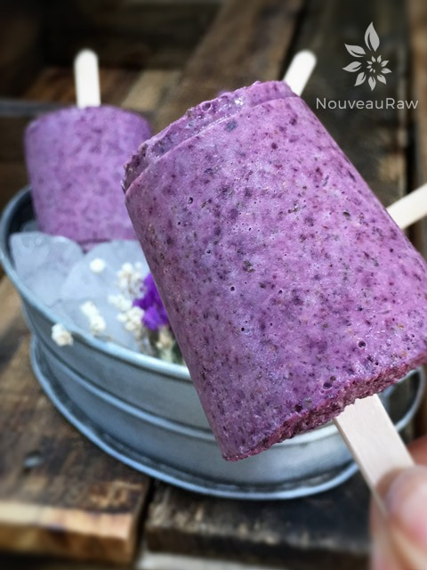
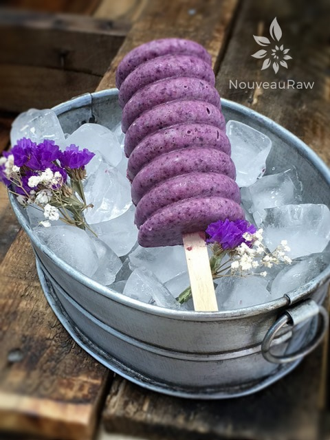
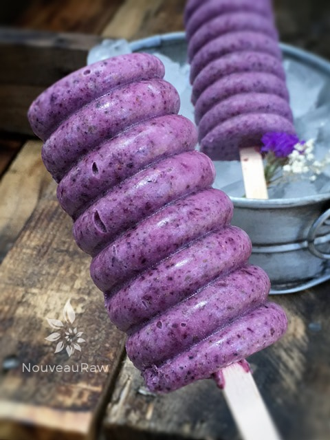

Blueberry Chia Cream Dixie Pops

~ raw, vegan, gluten-free ~
There is a good reason that the colors in this photo are so vibrant and no, it isn’t due to photoshop… it’s due to the abundant amount of anthocyanins found in blueberries.
Anthocyanins are plant pigments that are responsible for not only for the beautiful color but numerous health benefits. For starters, studies suggest that anthocyanins may lower blood glucose by improving insulin resistance, and reduce the digestion of sugars in the small intestine. (source) They are also loaded with antioxidants and have anti-inflammatory power.
I must be in great need of these things because I have been eating blueberries like they are about to go out of style. I am thankful that since I cleaned up my diet over eight years ago, my body now craves healthy foods.
I no longer even want Hostess cakes, pastries, or even those darn check-out-stand Whatchamacallit candy bars… instead I crave freshness, wholeness, simplicity, and vibrant colored foods.
Fruit is my “candy addiction” in life and always has been. One minute, I’m innocently going about my day… the next minute, I’m in the clutches of desire… for juicy, crisp, cold, fruit. I am not stating that fruit is a bad addiction to have, it could surely be far worse. BUT for me, too much sugar no matter what form it comes in can be a negative thing.
So, for me, I try to watch my fruit addiction. Monitor it, assess it, but most importantly… listen to my body. Why am I craving a particular fruit? Is it a sugar hit that I am looking for or could it be a deficiency in my body that is calling for a nutrient found in a certain fruit. Well, I am telling you… my body must really be needing some of that anthocyanin that I was talking about earlier. Because if you go to the grocery store to find blueberries and there aren’t any to be found… I might be the one to blame. Hehe.. You think I am kidding. :)
Anyway, let’s move onward towards making this simple and delicious recipe. I hope you enjoy it. Blessings, amie sue

Ingredients:
yields roughly 10+ popsicles
- 1 cup cashews, soaked 2 + hours
- 1/2 cup chia seeds
- 1 1/2 cups almond milk
- 2 Tbsp maple syrup or 1/2 tsp liquid stevia
- 1 tsp vanilla extract
- 1 cup organic blueberries
- dash Himalayan pink salt
Preparation:
- After soaking the cashews, drain and discard the soak water.
- In the blender combine the following; almond milk, soaked cashews, chia seeds, sweetener, vanilla, and blueberries. Blend until creamy smooth.
- Depending on your blender this process can take 1-3 minutes.
- Stop periodically and rub some of the cream between your fingers. If it gritty continue blending. Remember, we want a smooth mouth-feel texture.
- Pour the mixture into popsicle molds and place in the freezer until solid.
- I find it best to set all the molds on a baking sheet before I start to fill them. Then I just have to carry the tray to the freezer and don’t risk spilling anything.
- They should keep for about 1 month in the freezer, in an airtight container.
Freezing Suggestions for Ice Cream:
- Use an ice cream machine. Follow the manufactures directions.
- Freeze in popsicle molds or 3 oz Dixie cups with a popsicle stick inserted.
-
- Store the ice cream in the very back of the freezer, as far away from the door as possible. Every time you open your freezer door you let in warm air. Keeping ice cream way in the back and storing it beneath other frozen-sold items will help protect it from those steamy incursions.
- Ice cream is full of fat, and even when frozen, fat has a way of soaking up flavors from the air around it—including those in your freezer. To keep your ice cream from taking on the odors, use a container with a tight-fitting lid. For extra security, place a layer of plastic wrap between your ice cream and the lid.
- To soften in the refrigerator, transfer ice cream from the freezer to the refrigerator 20-30 minutes before using. Or let it stand at room temperature for 10-15 minutes.
- Wish to make your own raw ice cream, wonder what machine I might recommend, and more? Click (here) to check out the Reference Library!


© AmieSue.com